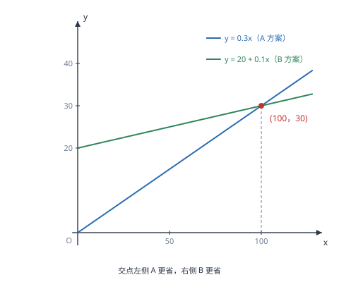

一次函数与方程、不等式及方案选择
方程 kx+b=0 的根是直线与 x 轴交点的横坐标，不等式 kx+b>0 的解集是直线在 x 轴上方的部分——同一个图象，三种读法。
| 所属主题 | 函数 |
|---|---|
| 所属模块 | 代数 |
| 课标学段 | 第四学段（7~9 年级） |
| 前置知识 | 一次函数的图象与性质、一元一次不等式（组） |
| 核心素养 | 几何直观模型观念应用意识 |
教材定位
人民教育出版社《人教版（2024版）义务教育教科书·数学》
八年级下册第23章 一次函数23.3 一次函数与方程(组)不等式23.4 实际问题与一次函数
对应八下 23.3 与 23.4：交点与图象法解不等式在 23.3，实际问题建模在 23.4。
说明
一次函数 y=kx+b 的图象是一条直线，而方程、不等式都能在这条直线上找到对应。令 y=0，得方程 kx+b=0，它的根就是直线与 x 轴交点的横坐标；令 y>0，得不等式 kx+b>0，它的解集就是直线位于 x 轴上方的那一段所对应的 x 范围。同样地，kx+b>m 的解集就是直线位于水平线 y=m 上方部分的横坐标范围。
把两个一次函数放在一起，就得到 k_1x+b_1=k_2x+b_2 这样的方程，它的解是两条直线交点的横坐标；而 k_1x+b_1>k_2x+b_2 的解集，是第一条直线位于第二条上方的横坐标范围。方案选择题正是这个模型的现实版本：两种方案的费用各是一个一次函数，交点就是「花费相同」的临界点，交点两侧分别对应两种方案各自更省的区间。
使用场景
当题目给出两种收费方式（话费套餐、快递计费、会员卡与单次消费）并要求「什么情况下哪种更划算」时，分别写出两个一次函数，求交点，再按区间下结论。答题时要写清三句话：交点坐标是什么、交点左侧哪个更省、交点右侧哪个更省。
当题目给出图象、要求不解方程直接写出不等式的解集时，用图象法：先找直线与 x 轴（或与另一条直线）的交点，再看直线在要求的一侧（上方或下方）对应的横坐标范围。特别注意 k 的符号会影响「左边大还是右边大」的判断，不能一律套「大于零在右边」。
注意点
解集的方向由 k 的符号决定，不能死记。k>0 时直线上升，交点右侧的函数值为正；k<0 时直线下降，交点左侧的函数值为正。判断时先看直线是上升还是下降，再定「哪一侧」。
实际问题中自变量往往有范围限制，结论必须落在这个范围内。例如通话时间至少为 0、租车数量必须是整数、方案只在「每月用量不超过 200 分钟」的区间内比较。若交点落在范围之外，说明在这个范围内某种方案始终更省，不能照搬「交点两侧各占一半」的说法。
证明

图 1：两条直线的交点就是两种方案花费相同的临界点，交点两侧各有一种方案更省
证明
结论 1求方程 kx+b=0 的根，等于求直线 y=kx+b 与 x 轴交点的横坐标。
最简单的对应：函数 y=kx+b 里，y 是直线上每一点的纵坐标。当 y=0 时，点落在 x 轴上，此时横坐标满足 kx+b=0——这正是方程的根。所以「求方程的根」与「求直线与 x 轴交点的横坐标」是同一件事的两种说法。
关键一步依据是 x 轴上的点纵坐标为 0：把直线上的点代入 y=0 就得到 kx+b=0，所以「在 x 轴上」与「满足方程」是同一个条件，两种问法答案相同。
结论 2不等式 kx+b>0 的解集，就是直线上所有在 x 轴上方的点对应的横坐标区间。
不等式：kx+b>0 意味着纵坐标为正，即点在 x 轴上方。把直线上所有在 x 轴上方的点找出来，它们的横坐标构成一段区间，这段区间就是不等式的解集。以 y=2x-4 为例，与 x 轴交于 (2,0)，直线上升，所以 x>2 时直线在 x 轴上方，解集为 x>2。
关键一步依据是不等式解集的定义「使式子取正值的全体 x」，与图象对应为「x 轴上方那部分的横坐标」；y=2x-4 中 k=2>0 说明直线上升，交点 (2,0) 右侧的点纵坐标为正。
结论 3比较两条直线的高低可以转化为看差函数 (k_1-k_2)x+(b_1-b_2) 的正负。
两个函数相减，就回到一个函数。k_1x+b_1>k_2x+b_2 等价于 (k_1-k_2)x+(b_1-b_2)>0，这又是一个「一次函数大于零」的问题。也就是说，比较两条直线的高低，可以转化为「看差函数的正负」，图象上表现为交点两侧一高一低。
关键一步依据是移项与合并同类项：把不等式右边的式子移到左边（两边同减一个式子，方向不变），左边整理后仍是一次式，于是问题回到「一次函数大于零」这一类；差函数的零点正是两条直线的交点。
结论 4方案题中两个费用函数之差的正负决定哪种方案更贵，差为零处就是临界点。
方案题的实际含义由此清楚：两个费用函数相减，差为正表示第一种更贵、差为负表示第一种更省，差为零处就是临界点。方案选择不需要分别试算很多个值，只需要求出这个临界点，再判断两侧各自的方向。
关键一步依据是上一条的差函数：临界点是差函数的零点，两侧差值符号相反，所以求出临界点并判断两侧符号，就能定出整个范围内哪种方案更省，而不必逐个代入试算。
结论 5两条直线的位置关系只有三种：斜率不同必交于一点；斜率相同则平行或完全重合。
为什么交点只有一个：两条直线若斜率不同，必然相交于唯一一点（因为方程 (k_1-k_2)x=b_2-b_1 有唯一解）；若斜率相同，则两线平行，要么处处不等（一种方案永远更省），要么完全重合（两方案等价）。三种情形对应三种结论，答题时要说清是哪一种。
关键一步依据是解一元一次方程：斜率不同时 k_1-k_2≠ 0，方程有唯一解，所以交点唯一；斜率相同时左边恒为 0，方程要么无解（平行、处处不等），要么有无穷多解（重合、两方案等价）。
动手实验
在同一张坐标纸上画 y=0.3x 与 y=20+0.1x 两条直线。取 x=0,50,100,150 分别算两边的值：0 与 20、15 与 25、30 与 30、45 与 35。可以看到 x<100 时第一条更低、x=100 时相等、x>100 时第一条更高。把四个点描出来，交点恰好落在 (100,30)，与计算结果一致。
解题思路
方案比较题走四步：分别写出两种方案的费用函数 y_1、y_2（注明自变量范围）；令 y_1=y_2 求交点横坐标；在交点两侧各取一个具体的 x 值代入比较，确定哪一侧哪种方案更省；按题目要求作答，写清「当……时选甲方案更省」。第三步取特殊值验证，比凭 k 的大小推断更稳。
图象法解不等式走三步：求出直线与 x 轴（或与另一条直线）的交点；判断直线的走向（上升还是下降）；按「上方或下方」确定交点哪一侧满足条件。若题目给的是图象而非解析式，第二步直接看图判断，不必求 k。
遇到分段计费（如出租车、水电费、快递首重续重）时，先按分段点把自变量分成几段，每段各写一个一次函数，再注明每段的取值范围。解题时先判断所求的 x 落在哪一段，再代入对应的式子，不要拿错公式。
按场景的例题
例 1（场景：方案选择） 两种话费套餐的比较
某通信公司推出两种套餐：A 套餐每分钟 0.3 元，无月租；B 套餐月租 20 元，每分钟 0.1 元。设每月通话 x 分钟，分别写出两种套餐的费用，并说明如何选择更划算。
解：A 套餐：y_1=0.3x；B 套餐：y_2=20+0.1x（x≥ 0）。令 y_1=y_2：0.3x=20+0.1x，得 0.2x=20，x=100，此时两种费用都是 30 元。取 x=50 比较：y_1=15、y_2=25，A 更省；取 x=200 比较：y_1=60、y_2=40，B 更省。从图象上看，交点 (100,30) 左侧 A 的直线更低，右侧 B 的直线更低。
答：通话少于 100 分钟时选 A 套餐；恰好 100 分钟时两种相同；超过 100 分钟时选 B 套餐。
例 2（场景：生活优化） 两家快递公司的运费比较
甲快递的运费是 y=5+2x（元），乙快递的运费是 y=3x（元），其中 x 是包裹质量（千克）。寄多重时选甲更便宜？
解：令 5+2x=3x，得 x=5，此时两家运费都是 15 元。取 x=2 比较：甲 5+4=9 元、乙 6 元，乙更省；取 x=8 比较：甲 5+16=21 元、乙 24 元，甲更省。从斜率看，甲的斜率 2 小于乙的斜率 3，说明甲「起步贵但每千克便宜」，所以质量大时甲占优。
答：包裹质量大于 5 千克时选甲更便宜；不足 5 千克时选乙；正好 5 千克时两家相同。
例 3（场景：竞技与游戏） 用图象法解不等式
已知一次函数 y=2x-4。求：(1) 图象与 x 轴交点的坐标；(2) 不等式 2x-4>0 的解集；(3) 当 y<2 时 x 的取值范围。
解：(1) 令 y=0：2x-4=0，x=2，交点 (2,0)。(2) k=2>0，直线上升，交点右侧函数值为正，所以 2x-4>0 的解集是 x>2（也可代数解：2x>4，x>2）。(3) y<2 即 2x-4<2，解得 2x<6、x<3；图象上就是直线位于水平线 y=2 下方的那一段对应的横坐标。
答：(1) (2,0)；(2) x>2；(3) x<3。
常用推论
若两条直线平行（k_1=k_2 且 b_1≠ b_2），则其中一条恒在另一条上方，方案比较的结论是「始终选某一种」，不存在临界点。若 k 与 b 都相同，两条直线重合，两种方案本质相同。
函数值的比较可以转化为差函数：y_1-y_2=(k_1-k_2)x+(b_1-b_2)。这个差函数仍是一次函数，它的零点就是交点横坐标，它的正负区间就是两种方案的优劣区间。这一步把「比较两个函数」降成了「研究一个函数」。
分段函数的分段点往往就在「计费方式切换」的位置。求分段点的办法是让两段表达式相等，解出的 x 就是分界值；把分界值代入任一段求出 y，就得到图象上的转折点坐标。折线图的每一个拐点，都可以这样算出来。
易错点
错解 2x-4>0 时，因为 2>0，就断定「解集在交点左侧」。
为什么错把方向判断弄反了。k>0 时直线上升，交点右侧的纵坐标才为正，所以解集应在右侧。
正确x>2。判断口诀可以记成「k>0 取右，k<0 取左」，但更稳的办法是代一个数验证：取 x=3，2× 3-4=2>0 成立，说明 3 在解集内，即右侧。
错比较话费套餐时，只算出交点 x=100，就写「所以 B 套餐更划算」。
为什么错交点只是「费用相同」的临界点，本身不能说明哪一方更省。必须比较交点两侧各取一个值时的大小，才能确定优劣区间。
正确取 x=50 与 x=200 分别验证：前者 A 省、后者 B 省，结论应写成「少于 100 分钟选 A，多于 100 分钟选 B」。
错分段计费题中，把 x=5 直接代入首重那一段的式子 y=8，得快递费 8 元。
为什么错没有先判断 x 落在哪一段。x=5 千克已经超过首重的 1 千克，应代入续重的那一段，不能套用首重的式子。
正确先看分段条件，5>1，用 y=8+2(x-1)，代入得 16 元。分段函数的题，第一步永远是「定位」。
直观理解
把两个方案想成两个人赛跑，位置就是费用，横轴是时间（用量）。谁的位置低，谁就更省。两条直线的交点就是「并排」的那一刻；在这之前谁在前面、之后谁反超，取决于两人谁跑得快（谁斜率小）——斜率小的那个起步可能落后，但后程会追上。所以方案题不必试很多次，只要找到「并排」的那一刻，再看谁跑得快，胜负区间就定了。